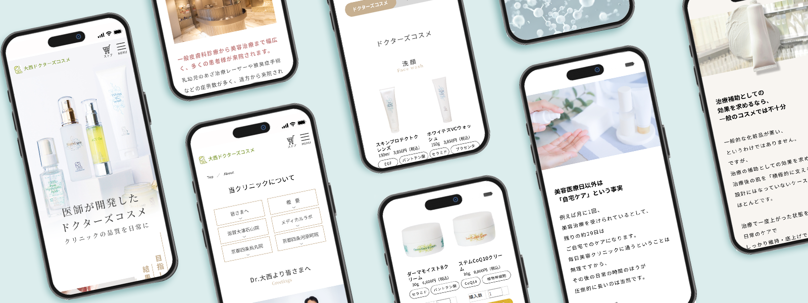
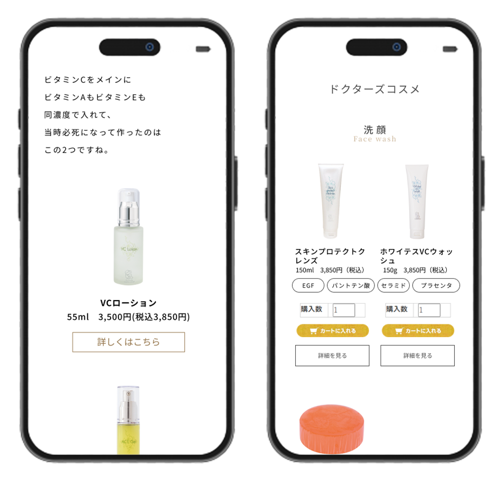
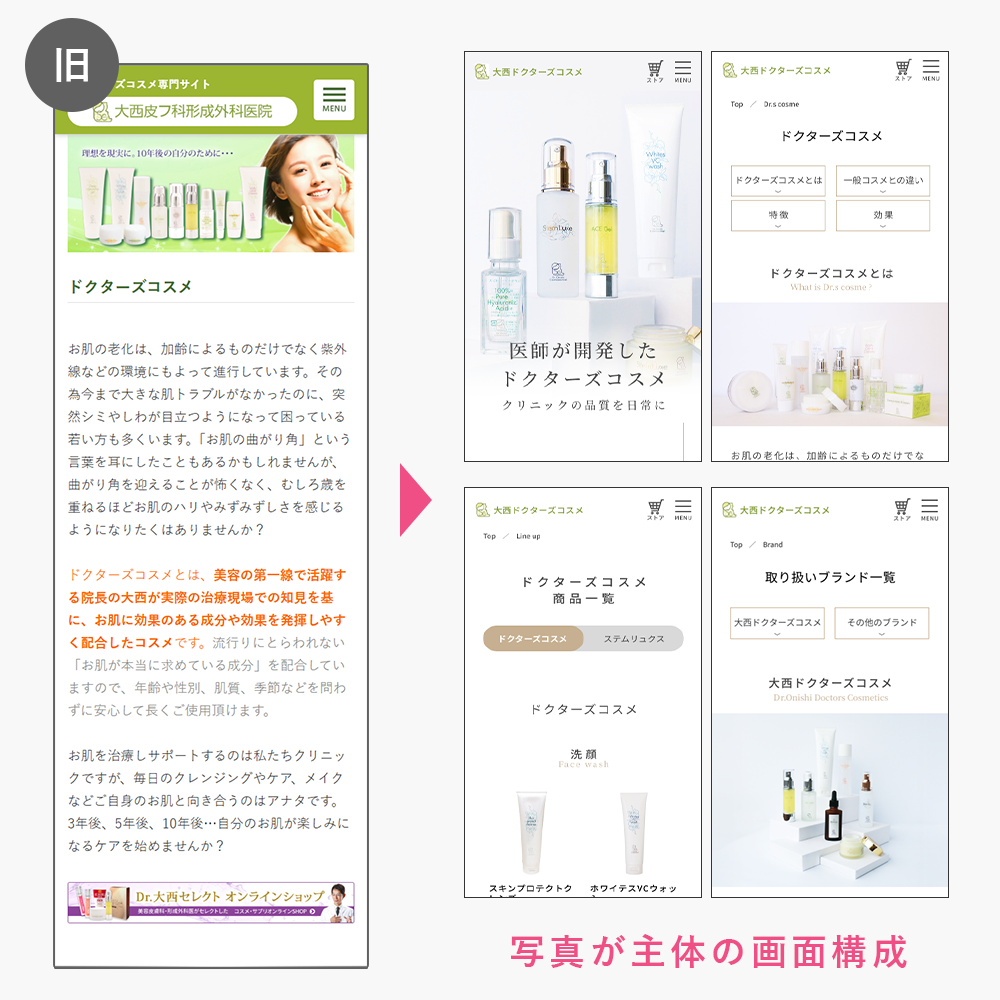
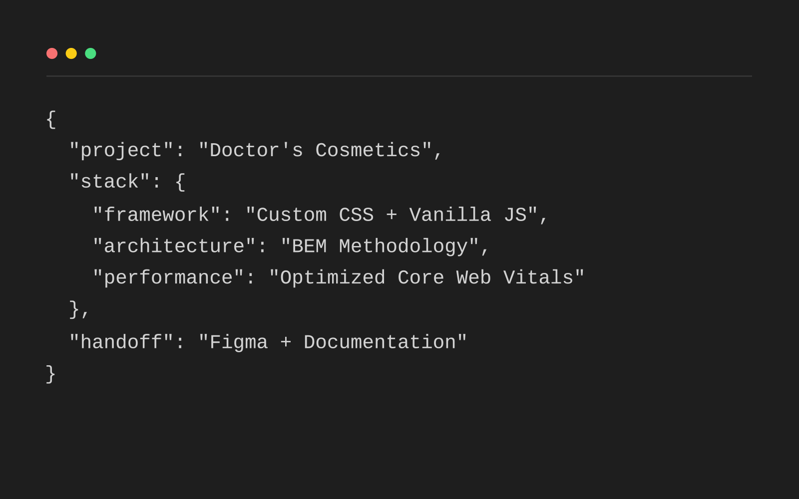

■ 目的の違う情報が同じページに並び、次の行動が分かりにくかった
改修前はSEO観点で1ページの中に情報が積み上がった結果、 ブランド理解、商品紹介、他ブランド情報などが混在していた。 そのため、ユーザーが「何を知るページなのか」「次に何をすればよいか」を判断しにくい状態だった。
01. CASE STUDY

概要
医療法人の公式サイト → 専門ページ → 通販サイトを導線でつなぎ、検索流入の拡大・商品やコスメブランドの理解促進・購買導線の改善を目的としたWEB改善の事例。
通販サイトのドメインパワーの弱さや重複管理の負荷といった複数の制約の中、各サイトが持つ情報や役割を整理し、専門ページ＝"理解のハブ"、通販サイト＝"購入の場"として再定義することで、スムーズなユーザー体験を横断的に設計。公開後も改善を継続している。
ドクターズコスメという名前は知っているものの、 特徴や選び方までは理解していないユーザー。 来院経験がありブランドは認知しているが、 まだ積極的に購入検討していない層を主な対象とした。
専門サイトでブランドや商品の理解を深め、 通販サイトへ自然に進める導線を整えること。 専門サイトは「理解」、通販サイトは「購入」を担う形に整理した。
自然検索からの流入、 公式サイトから専門サイトへの遷移、 そして専門サイトから通販サイトへの遷移を重視した。 購入率の最適化は通販サイト側の改善と連動する前提で設計している。
当初はSEO会社よりスマホでの読みやすさ改善として指示があったが、 通販サイト改修と並行して見えていた課題を踏まえ、 見た目の調整ではなく、サイトの役割・情報の持ち場・導線まで見直すべきだと提案した。 この案件では、SEO会社・上長と相談しながら提案～実装までを担当している。
02. PROBLEM
改修前はSEO観点で1ページの中に情報が積み上がった結果、 ブランド理解、商品紹介、他ブランド情報などが混在していた。 そのため、ユーザーが「何を知るページなのか」「次に何をすればよいか」を判断しにくい状態だった。
タイトルと内容が合っていないページや、似た内容が複数ページに分かれている箇所があり、読んでも理解が深まりにくい状態だった。
通販サイトはドメインが弱く、単体での自然検索の流入はほとんど望めなかった。 一方で、公式サイトの強いドメインを活かし、サイト内に専門サイトを作成していたが、公式サイト → 専門サイトの導線も十分ではなく、流入が専門サイトまで届いていない状態だった。 さらに、専門サイトへ訪問したとしても、情報を詰め込みすぎたページでは、理解してから購入へ進む流れが途切れやすい構造になっていた。
公式サイトは独自CMS（コンテンツ管理システム）を用いており、また医療ガイドラインによる表現制限など、専門サイトと通販サイトの並行運用には複数の負荷がある状態であった。 取り扱い商品も200件を超え、各ページ数やコンテンツページも多く管理コストがかかるため、同じ情報を複数サイトで持つことは負担が大きかった。
03. THE INSIGHT
各サイトの特性を整理・再定義し、
役割を分けて、導線でつなぐ。
医療情報を扱う公式サイトと、美容コスメを取り扱う通販サイト、そのままつないでしまうと文脈やユーザーの心理にズレが生まれてしまうリスクがあった。
そこで、私は公式サイトと通販サイトの間にあった専門サイトを「理解のハブ」として最適化することで、自然な橋渡しができる構造にすることをSEO会社に提案した。
公式サイトはドメインパワーを活かして流入を集める役割 → 専門サイトはブランド理解を深める役割 →
通販サイトは購入の場という役割に整理し直すことが重要だと判断した。
問題は情報量そのものだけでなく、サイトごとの特性を活かしきれていないことであった。理解を促進する専門サイトは、UIを少し整えるだけではなく、情報を整理し直し、サイトの構成も見直す必要があった。
04. STRATEGIC DECISION
01. PROJECT START
SEO会社からは、専門サイトに連なるように作成していたブログ記事の流入が向上してきたということで、専門サイトの強化を求められていた。 その時点ではレスポンシブ対応やスマホでの読みやすさ改善を中心とした提案が出ていた。 ただ、同時並行で行っていた通販サイト改修の課題（売上向上）を踏まえると、表示改善だけでは根本解決にならないと感じた。
02. REFRAMING THE ISSUE
私は、専門サイトの立ち位置、情報整理、導線設計、ブランディングまで含めて見直した方が、 本来の目的である“認知度の拡大”と“売上向上”につながる価値のある改修になると提案した。 ここで「読みやすさ」から「構造設計」へ問題の視野を広げている。
03. DECISION MAKING
04. REASONING
SEO会社・上長と相談した結果、病院サイトのドメインの強さを活かし、 専門サイトを「理解のハブ」、通販サイトを「購入の場」とする方針を採用した。 また、商品詳細を両方で持つと、内容重複や更新負荷、ガイドライン面のリスクが大きいことを普段運用している視点から説明し、 商品詳細は購入の場である通販サイト側へ集約することで、購入の後押しの効果が大きいと提案。上長からも、運用面の負荷が大きいことを理由に二重管理案は避けるべきだと判断された。
一方で、SEO会社からは、SEO観点では他ブランド情報を載せる方が、流入機会を広げられるという提案があった。 そのため、ブランド理解に特化する方針は持ちつつも、追加として他ブランドの情報も入れたブランド別ページの作成も行っている。 今後もSEOやAIO・MEOの対策として、継続して見ていくべき課題として捉えている。
05. FINAL DECISION
05. DESIGN STRUCTURE
流入強化を担う公式サイト、理解を深める専門サイト、購入を担う通販サイトの役割を整理し、横断的ではあるがスムーズな導線に整備。 専門サイトでは、ブランド背景、選び方、商品一覧など「理解を進める情報」をまとめた。 一方で、購入判断に必要な詳細情報は通販サイトへ集約し、 理解するフェーズと購入するフェーズを、ユーザーが段階的に進められるようにしている。
具体的には、専門サイトにはブランド背景や比較しやすい導線を残し、 商品詳細や購入導線は通販サイトへ渡した。 これは見せ方だけでなく、更新のしやすさや責任範囲まで含めて整理した結果である。
また、専門サイトの改修が完了した後に、病院サイトから専門サイトへの流入導線も増やす予定である。 専門サイトへの流入を増やすことでターゲットユーザーをしっかり受け止め、理解を深めてから通販サイトへ渡す目的も達成したい。 さらに、別スタッフによる専門サイトのブログ更新は引き続き継続されるので、自然検索による新規ユーザーの獲得も少なからず見込んでいる。 新規ユーザーの購入につながるように、通販サイトへの流入経路の最適化も今後の課題としている。
06. UI DESIGN
単に整えるのではなく「ここで何を読ませるか」「どこで比較させるか」「いつ通販サイトへ渡すか」を明確にすることが重要だった。
その考えを、情報設計とUIの両方で揃えている。
また公式サイトが医療を扱うサイトであることから、専門サイトに訪れるユーザー心理を考慮したデザインやタイポグラフィの設計を行った。ただし、商品が美容向け商品であるため、医療デザインと美容デザインのバランスを取る必要もあった。
独自CME制約や医療ガイドラインなどの制約がある中でも、ユーザー体験が向上するようにデザインへと落とし込んだ。
公式サイト利用者の80％以上がスマートフォンである前提や、SEO会社からもスマホでの読みやすさ改善の指示があったため、スマホ操作を基準にUIを設計した。 TOPはサイトの入り口としての役割と定義し、文章量を抑え、写真主体で視覚的に内容を理解＆さらに深い階層へと読み進めやすいように再構成している。
病院サイトからの流入を考慮し、専門サイトのタイポグラフィは、病院サイトの文字サイズを引き継ぎつつ、コスメブランドとしての柔らかさや上品さも感じられるように行・文字間隔にゆとりを持たせ、可読性を担保。
特殊なフォントは使用せずに、幅広い年齢層が読みやすいファミリーを採用した。
CTA（ユーザーへの行動喚起）はユーザー心理をベースに設計。例えば、理解を優先するページでは商品詳細や商品一覧に飛ぶようにし、商品一覧ページでは直接カートに入れられる機能を設置し、興味とCTAの度合いが比例するように変えている。 CTAが悪目立ちすぎないように、ボタンや通販バナーといった複数のデザインを用意し、見せ方も整理している。
デザイン面では、病院サイトとしての信頼感を保ちつつ、
美容ブランドとしての美しさや上品さも感じられるよう、色彩設定や画像選定などを整理した。
特に色彩設定では、商品に目が行くようにベースは落ち着いた色味にしつつ、CTAや重要な情報はアクセントカラーで目立たせるようにしている。選定した画像も、SNS映えするような美しい写真を選びつつ、医療系のサイトに馴染むような落ち着いたトーンのものを選んでいる。


07. IMPLEMENTATION DESIGN

独自のCMEへ実装するにあたり、既存のベースコードでは、画面の構成やSEOタグの設置が今回の施策の意図に合わない部分があったため、実装設計とTOPページのコーディングは私が担当。 今回の施策を、実際の画面として成立させるベースを作った。 HTMLのタイトルタグについては、SEO会社の修正指示も踏まえながら調整している。
下層ページは別担当での実装を予定しており、私が依頼時の、既存コードとの衝突防止用のスコープ設定、レイアウトや挙動、特殊なコード（通販サイトのカート機能）の受け渡しや確認を行い、 デザインと実装のズレが起きないよう橋渡しを担っている。
また、公開後もSEOタグ改善、UI改善、導線調整を続けており、 一度作って終わりではなく、改善を回せる状態を意識している。
08. EXPECTED IMPACT & RESULTS
専門サイトと通販サイトの役割を分けることで、 ユーザーが「理解 → 比較 → 購入」の流れで進みやすい状態を目指した。 情報の重複や導線の迷いを減らし、 専門サイトでは理解に集中し、必要な段階で通販サイトへ移れる構造にしている。
あわせて、情報の持ち場を整理したことで、 更新や改善の責任範囲も明確になり、 運用負荷を抑えながら改善を続けやすい状態を作れた。
TOPページでは、文章中心で分かりにくかった構成を、 写真主体の見せ方へ変更し、入口としての役割を明確化した。 商品一覧では、ブランドサイトとしての商品紹介に特化し、 カードUIで比較しやすく整理している。
また、新たに「誕生秘話」ページを追加し、 クリニック発のコスメである背景や開発意図を伝えられるようにした。 商品理解だけでなく、共感や信頼形成にもつながる導線を意識している。
現在この施策はコーディング段階であり、効果測定についてはこれからとなるため、現時点では期待する効果をもとに狙いを整理する。 これまでのさまざまな通販運用・改善施策の積み重ねにより、私が入社した前と比較して通販事業は約4倍規模へ成長している。その上で、顧客分析を行ったところ、リピート率の高い商品であることが分かっている。 この専門サイトは公式サイトからの新規流入ならびに、自然検索での新規流入の両方を担う役割がある。そのため、今回の施策で少しでも新規獲得につながることが出来れば、売上の伸びにつながると期待している。
09. LEARNING
今回の施策を通して、制約のある環境でも、 役割を適切に分けて導線でつなぐことで、 ユーザー体験と事業成長の両立を目指せると実感した。
また、見た目の改善だけでなく、 ドメインの強さ、ガイドライン、運用者視点での更新負荷、コーディング担当などの関係者との連携まで含めて 施策実行後の影響を把握し、継続的に改善できる状態を作る大切さを学んだ。 今後も、こうした考え方をベースにプロダクト全体の体験設計に取り組んでいきたい。
10. NEXT ACTION